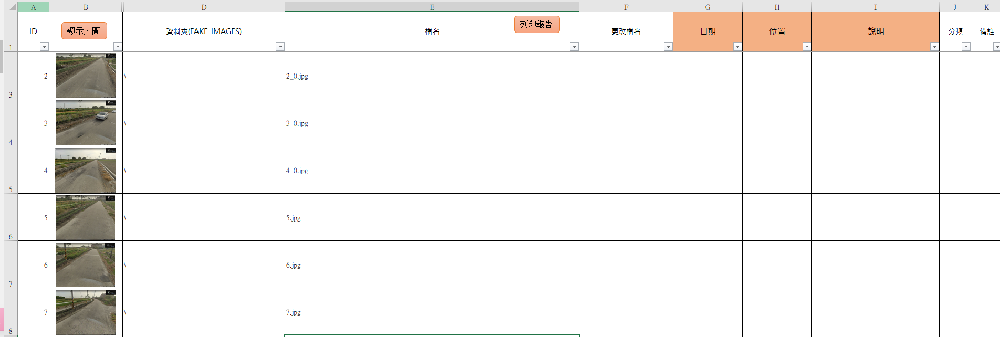
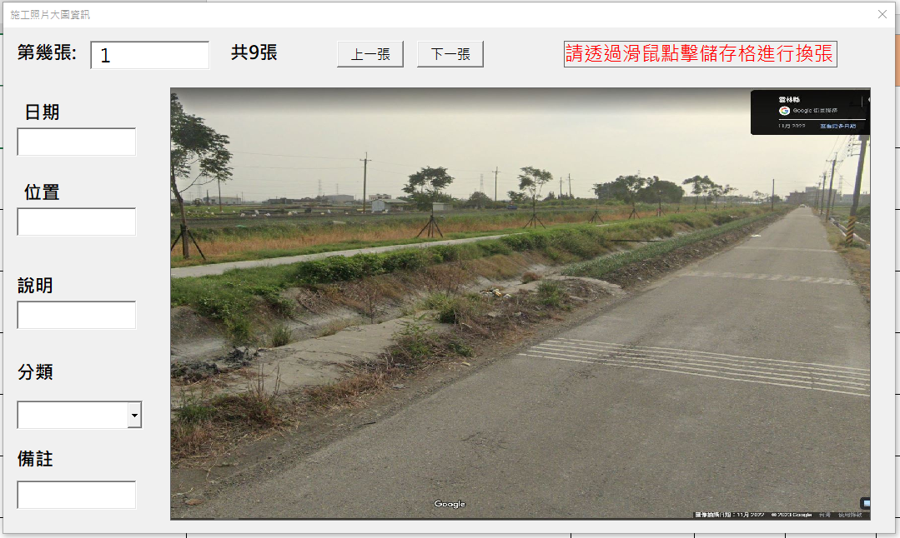

前言
工程進行階段因為業主、監造不一定都會在現場，無論施工抽查、品質管理、隱蔽部分尺寸紀錄、督導會勘...等等內容，大多數文件都會需要照片作為佐證資料，尤其是假設工程、隱蔽部分更是需要，因此整個工程案進行過程可能會累積大量的照片，後續的請款報表照片貼附、照片檔案查找，會是讓內業人員相當花費時間的一環。
實務上大多會採用LINE群組進行照片上傳，照片說明會出現在畫面中的小白板，再由內業人員自行下載備存，放在本機硬碟中或者是放在公司的NAS裡面，未來需要利用時再去自己所分類的資料夾中比對、下載、貼附，因此對於處理照片的檔案管理、報表輸出我想需要有方法來完成大量、繁複、簡單的工作流程，節省時間來做其他業務內容。
因此，施工照片VBA誕生了，於2023年1月發布給大眾使用運行至今，該修復的內容大概已經完成，以下為目前所釋出的施工照片VBA部分內容，完整內容請參考施工照片VBA完整原始碼 。
DEMO
VIDEO
第一章節 資料夾
1-1 取得資料夾
學習如何透過VBA內建的資料夾選擇視窗將照片存放路徑放置到工作表
1 2 3 4 5 6 7 8 9 10 11 12 13 14 15 16 17 Sub SelectFolder()Dim objDialog As FileDialogSet objDialog = Application.FileDialog(msoFileDialogFolderPicker)With objDialog If .Show = True Then Sheets("Main" ).Range("B2" ) = objDialog.SelectedItems(1 ) End If End With End Sub
1-2 查看資料夾
學習如何透過Shell的方法來開啟指定資料夾
1 2 3 4 5 6 7 Sub showFolder()main_path = Sheets("Main" ).Range("B2" ) Shell "explorer.exe " & main_path, vbNormalFocus End Sub
第二章節 照片基本資料
2-1 照片檔案管理

資料庫介面
1 2 3 4 5 6 7 8 9 10 11 12 13 14 15 16 17 18 19 20 21 22 23 24 25 26 27 28 29 Sub getDataFromFolder()Dim clsInf As New clsInformationDim objFile As New clsmyFileWith Sheets("Main" )If clsInf.IsPasteIMG = True Then objFile.IsPaste = True mywidth = CInt (clsInf.getIMGwidth) objFile.photo_width = mywidth / 4 objFile.photo_height = mywidth End If objFile.main_path = .Range("B2" ) objFile.delRng objFile.getAllFolder objFile.PastePictures End With Call extractNames Call ApplyFilterToAllUsedCells End Sub
刪除既有欄位
1 2 3 4 5 6 7 8 9 10 11 12 13 14 15 16 17 18 19 20 21 22 23 24 25 26 27 28 29 30 Sub delRng()tmp = split(main_path, "\" ) main_folder = tmp(UBound(tmp)) With shtResult.Range("D1" ) = "資料夾(" & main_folder & ")" Set rng_last = .Cells.SpecialCells(xlCellTypeLastCell)lr = .Cells(.Rows.Count, 1 ).End (xlUp).Row lc = .Cells(1 , .Columns.Count).End (xlToLeft).Column If lr > 1 Then .Range("A2" ).Resize(rng_last.Row, rng_last.Column).ClearFor Each Shape In .Shapes If Shape.TopLeftCell.Row <> 1 Then Shape.Delete Next End With End Sub
取得指定資料夾下所有照片路徑
1 2 3 4 5 6 7 8 9 10 11 12 13 14 15 16 17 18 19 20 21 22 23 24 25 26 27 28 29 30 31 32 33 34 35 Sub getAllFolder()Dim objFolder As Object Set objFolder = objFso.GetFolder(main_path)Call getAllFile(objFolder)End Sub Private Sub getAllFile(ByVal objFolder As Object )If objFolder.Files.Count <> 0 Then For Each objFile In objFolder.Files s = objFso.GetExtensionName(objFile) If IsPhoto(s) Then coll_photo_path.Add objFile.path Next End If If objFolder.subFolders.Count <> 0 Then For Each objSubFolder In objFolder.subFolders Call getAllFile(objSubFolder) Next End If End Sub
貼上照片到操作介面
1 2 3 4 5 6 7 8 9 10 11 12 13 14 15 16 17 18 19 20 21 22 23 24 25 26 27 28 29 30 31 32 33 34 35 36 37 38 39 40 41 42 43 44 45 46 47 48 49 50 51 52 53 54 55 56 57 58 59 60 61 62 63 64 65 66 67 68 69 70 71 72 73 74 75 76 77 78 79 80 81 82 83 84 85 86 87 88 89 90 91 92 93 94 95 96 97 98 Sub PastePictures()With shtResult lr = .Cells(1 , 1 ).End (xlDown).Row lc = .Cells(1 , 1 ).End (xlToRight).Column - 1 Set rng_last = .Cells(lr, lc) r = 2 For Each photo_path In coll_photo_path If IsPaste = True Then Set objTargetCell = .Cells(r, 2 ) objTargetCell.ColumnWidth = photo_width objTargetCell.RowHeight = photo_height Set pic = .Pictures.Insert(photo_path) With pic dblGap = 2 # .ShapeRange.LockAspectRatio = msoTrue Set ranOri = objTargetCell dblRatioPic = .Width / .Height dblRatioOri = ranOri.Width / ranOri.Height If dblRatioPic > dblRatioOri Then .Width = ranOri.Width - 2 * dblGap .Top = ranOri.Top + 0.5 * ranOri.Height - 0.5 * .Height .Left = ranOri.Left + dblGap Else .Height = ranOri.Height - 2 * dblGap .Top = ranOri.Top + dblGap .Left = ranOri.Left + 0.5 * ranOri.Width - 0.5 * .Width End If End With End If .Cells(r, 1 ) = r - 1 .Cells(r, 3 ) = photo_path .Cells(r, 4 ) = getParentFolder(photo_path) .Cells(r, 5 ) = getFileName(photo_path) .Cells(r, 1 ).Resize(1 , rng_last.Column).Borders.LineStyle = 1 .Cells(r, 6 ).Resize(1 , rng_last.Column).HorizontalAlignment = xlLeft r = r + 1 Next End With End Sub Function getParentFolder(ByVal path As String )tmp_folder = Replace(path, main_path, "" ) tmp = split(tmp_folder, "\" ) tmp_filename = tmp(UBound(tmp)) getParentFolder = Replace(tmp_folder, tmp_filename, "" ) End Function Function getFileName(ByVal path As String )tmp = split(path, "\" ) getFileName = tmp(UBound(tmp)) End Function
2-2 基本資料登錄

操作介面表單化
1 2 3 4 5 6 7 8 9 10 11 12 13 14 15 16 17 18 19 20 21 22 23 24 25 26 27 28 29 30 31 32 33 34 35 36 37 38 39 40 41 42 43 44 45 46 47 48 49 50 51 52 53 54 55 56 57 Private Sub UserForm_Initialize()With Sheets("Result" ) lr = .Cells(.Rows.Count, 1 ).End (xlUp).Row Me .Label2.Caption = "共" & lr - 1 & "張" Me .Label3.Caption = .Cells(1 , 7 ) Me .Label4.Caption = .Cells(1 , 8 ) Me .Label5.Caption = .Cells(1 , 9 ) Me .Label6.Caption = .Cells(1 , 10 ) Me .Label7.Caption = .Cells(1 , 11 ) Me .TextBox1 = "1" Me .ComboBox1.AddItem "施工抽查" Me .ComboBox1.AddItem "品質管制" Me .ComboBox1.AddItem "缺失改善" Me .ComboBox1.AddItem "施工中" End With End Sub Private Sub TextBox1_Change()Dim clsI As New clsInformationOn Error Resume Next If TextBox1.Value <> "0" Then s = Cells(TextBox1.Value + 1 , 3 ) Image1.Picture = LoadPicture(s) ImageTmp.TextBox2 = Cells(TextBox1.Value + 1 , 7 ) ImageTmp.TextBox3 = Cells(TextBox1.Value + 1 , 8 ) ImageTmp.TextBox4 = Cells(TextBox1.Value + 1 , 9 ) ImageTmp.ComboBox1 = Cells(TextBox1.Value + 1 , 10 ) ImageTmp.TextBox6 = Cells(TextBox1.Value + 1 , 11 ) End If End Sub
第三章節 報表版型
3-1 報表基本版型
1 2 3 4 5 6 7 8 9 10 11 12 13 14 15 16 17 18 19 20 21 22 23 24 25 26 27 28 29 30 31 32 33 34 35 36 37 38 39 Sub getReportShts()Dim coll As New CollectionFor Each sht In Sheets If sht.Name Like "*-*" Then coll.Add sht.Name End If Next For Each it In coll j = j + 1 p = p & j & "." & it & vbNewLine Next AGAIN: mode = InputBox("請選擇列印版型:" & vbNewLine & p) Sheets(coll(CInt (mode))).PrintPreview msg = MsgBox("這是您要的版型嗎?" , vbYesNo) If msg = vbYes Then Sheets("Main" ).Range("B4" ) = coll(CInt (mode)) Else GoTo AGAIN End If Sheets("Main" ).Activate End Sub
3-2 報表客製版型⭐
學習如何從既有版型調整標籤塊到指定位置並調整數量，批次代入工作表
<<照片-1>> 引入照片
<<位置-1>> 對應H欄
<<日期-1>> 對應G欄
<<說明-1>> 對應I欄
1 2 3 4 5 6 7 8 9 10 11 12 13 14 15 16 17 18 19 20 21 22 23 24 25 26 27 28 29 30 31 32 33 34 35 36 37 38 39 40 41 42 43 44 45 46 47 48 49 50 51 52 53 54 55 56 57 58 59 60 61 62 63 64 65 66 67 68 69 70 71 72 73 74 75 76 77 78 79 80 81 82 83 84 85 86 87 88 Sub checkReportFormat() Dim coll As New Collection For Each rng In Sheets(getReportShtName).UsedRange If rng.Value Like "<<*>>" Then tmp = Replace(rng.Value, "<<" , "" ) tmp = Replace(tmp, ">>" , "" ) coll.Add tmp End If Next Dim coll_unique As New Collection For Each it In coll s = Split(it, "-" ) ky = s(0 ) Set rng = Sheets("Result" ).Rows(1 ).Find(ky) If rng Is Nothing And ky <> "照片" Then Sheets(getReportShtName).Activate MsgBox "【" & it & "】:對應不到Result的表頭名稱" Set rng_focus = Sheets(getReportShtName).Cells.Find("<<" & it & ">>" ) rng_focus.Select End End If num = s(1 ) On Error Resume Next coll_unique.Add num, CStr (num) On Error GoTo 0 Next Dim coll_count As New Collection For Each it_unique In coll_unique cnt = 0 For Each it In coll s = Split(it, "-" ) num = s(1 ) If num = it_unique Then cnt = cnt + 1 End If Next coll_count.Add it_unique & "-" & cnt Next For i = 1 To coll_count.Count - 1 s_cnt = Split(coll_count(i), "-" )(1 ) e_cnt = Split(coll_count(i + 1 ), "-" )(1 ) If s_cnt <> e_cnt Then MsgBox "報表位置註記項目，不同編號應具有相同數量!" & vbNewLine & _ "請檢核第" & Split(coll_count(i), "-" )(0 ) & "次與第" & Split(coll_count(i + 1 ), "-" )(0 ) & "次!" , vbCritical End End If Next End Sub
3-3 文字細節調整
日期是否出現於右下角的浮水印文字塊，調整其文字顏色及網底顏色
1 2 3 4 5 6 7 8 9 10 11 12 13 14 15 16 17 18 19 20 21 22 23 24 25 26 27 28 29 30 31 32 33 34 35 36 37 38 39 40 41 42 43 44 45 46 47 48 Sub AddText(ByVal txtX, ByVal txtY, ByVal txtHeight, ByVal txtWidth, ByVal txtStr, Optional ByVal RGB_Selector As Integer = 0 )Dim o As New clsInformationDim r As Long Dim g As Long Dim b As Long Dim r2 As Long Dim g2 As Long Dim b2 As Long If o.IsPrintDate = False Then Exit Sub RGB_Interior = o.getInteriorColor Call o.VBLongToRGB(RGB_Interior, r, g, b)RGB_Font = o.getFontColor Call o.VBLongToRGB(RGB_Font, r2, g2, b2)With ThisWorkbook.Sheets(report_shtname) .Activate ActiveSheet.Shapes.AddTextbox(msoTextOrientationHorizontal, txtX, txtY, txtHeight * Len(txtStr) * 0.33 , txtHeight).Select Selection.ShapeRange(1 ).TextFrame2.TextRange.Characters.text = txtStr Selection.ShapeRange.Fill.Visible = msoFalse Selection.ShapeRange.Line.Visible = msoFalse Selection.ShapeRange.ZOrder msoBringToFront With Selection.ShapeRange(1 ).TextFrame2.TextRange.Characters.Font .Bold = msoTrue .Fill.ForeColor.RGB = RGB(r2, g2, b2) .Size = txtHeight * 0.5 End With If o.IsPrintDateBack = True Then With Selection.ShapeRange(1 ).Fill .Visible = msoTrue .ForeColor.RGB = RGB(r, g, b) End With End If End With End Sub
第四章節 報表輸出
4-1 報表輸出方法 ⭐
建立列印群組，根據版型決定每幾張要換頁，由工作表未隱藏的列決定列印順序，未來亦可建立自己的列印規則，將備註欄的資料篩選併入作為列印的觸發擴充項目(比如設定改善編號、頁次來將工作表的順序進行重新調整)。
1 2 3 4 5 6 7 8 9 10 11 12 13 14 15 16 17 18 19 20 21 22 23 24 25 26 27 28 29 30 31 32 33 34 35 Sub getPrintGroups()Call checkDateFormatCall checkReportFormatDim f As New clsMyfunctionDim coll_rows_final As New Collection Set coll_rows = getRowsUnHidden folder_name = Format(Now(), "YYYYMMDD-HHMMSS " ) For Each r In coll_rows With Sheets("Result" ) If .Cells(r, .Columns.Count).End (xlToLeft).Column > 5 Then coll_rows_final.Add r End If End With Next If coll_rows_final.Count > 0 Then Call printFilesByRows(coll_rows_final, True , folder_name) Set coll_rows_final = Nothing Sheets("Main" ).Activate Workbooks(Workbooks.Count).Activate End Sub
列印相關代碼，包含列印成PDF跟列印成XLS
1 2 3 4 5 6 7 8 9 10 11 12 13 14 15 16 17 18 19 20 21 22 23 24 25 26 27 28 29 30 31 32 33 34 35 36 37 38 39 40 41 42 43 44 45 46 47 48 49 50 51 52 53 54 55 56 57 58 59 60 61 62 63 64 65 66 67 68 69 70 71 72 73 74 75 76 77 78 79 80 81 82 83 84 85 Sub printFilesByRows(ByVal coll_rows, ByVal IsXLS As Boolean , ByVal folder_name As String )Dim o As New clsReportDim f As New clsMyfunctionDim coll_recover As New Collectionreport_shtname = Sheets("Main" ).Range("B4" ) Set coll_key = getKeyWords Set wb = Workbooks.AddThisWorkbook.Activate For Each r In coll_rowsKeepPrint: i = i + 1 For Each s In coll_key myKey = split(s, "," )(0 ) col = split(s, "," )(1 ) myAddress = getAddressByKeyWord(myKey, CStr (i)) If myAddress <> "" Then If myKey = "照片" Then file_name = file_name & r & "-" Call o.PastePhoto_giveRng(Sheets(getReportShtName).Range(myAddress), Sheets("Result" ).Cells(r, "C" ), Sheets("Result" ).Cells(r, CInt (col))) ElseIf myKey = "日期" Then Sheets(getReportShtName).Range(myAddress) = f.tranStrToDate(Sheets("Result" ).Cells(r, CInt (col))) Else Sheets(getReportShtName).Range(myAddress) = Sheets("Result" ).Cells(r, CInt (col)) End If coll_recover.Add "<<" & myKey & "-" & CStr (i) & ">>;" & myAddress IsPrinted = False Else IsPrinted = True If IsXLS = False Then Call printReportPDF(file_name) Else Call printReportToWb(wb, file_name) End If Call clearReport(coll_recover) file_name = "" i = 0 GoTo KeepPrint End If Next Next If IsPrinted = False Then If IsXLS = False Then Call printReportPDF(file_name) Else Call printReportToWb(wb, file_name) End If Call clearReport(coll_recover) End If If IsXLS = True Then Call printReportToWb_Save(wb, folder_name)End Sub
4-2 照片歸檔
將工作表上手動紀錄的資料內容依照指定方式批次針對照片原始檔案進行檔名更改，未來引入時會先判定檔名內容引入工作表相對應資料。
1 2 3 4 5 6 7 8 9 10 11 12 13 14 15 16 17 18 19 20 21 22 23 24 25 26 27 28 29 30 31 32 33 34 35 36 37 38 39 40 41 42 43 44 45 46 47 48 49 50 51 52 Sub ChangeAllFileName()If Sheets("Result" ).AutoFilterMode Then Sheets("Result" ).AutoFilterMode = False End If Call getCombineNamesDim objFile As New clsmyFileWith Sheets("Main" ) objFile.main_path = .Range("B2" ) objFile.changeFileName End With Call getDataFromFolder End Sub Sub getCombineNames()Dim clsInf As New clsInformationSet coll = clsInf.getCollStructure(clsInf.getReNameStruc)With Sheets("Result" ) lr = .Cells(.Rows.Count, 1 ).End (xlUp).Row For r = 2 To lr If .Cells(r, .Columns.Count).End (xlToLeft).Column > 5 Then p = "" For Each col In coll p = p & .Cells(r, col) & "_" Next .Cells(r, "F" ) = mid (p, 1 , Len(p) - 1 ) End If Next End With End Sub
改名部分
1 2 3 4 5 6 7 8 9 10 11 12 13 14 15 16 17 18 19 20 21 22 23 24 25 26 27 28 29 30 Sub changeFileName()With shtResult lr = .Cells(.Rows.Count, 1 ).End (xlUp).Row For r = 2 To lr oldname = .Cells(r, 3 ) If .Cells(r, 6 ) Like "*.jp*" Then newname = main_path & .Cells(r, 4 ) & .Cells(r, 6 ) Else newname = main_path & .Cells(r, 4 ) & .Cells(r, 6 ) & ".jpg" End If If .Cells(r, 6 ) <> "" Then Debug.Print "old:" & oldname Debug.Print "new:" & newname Name oldname As newname End If Next End With End Sub